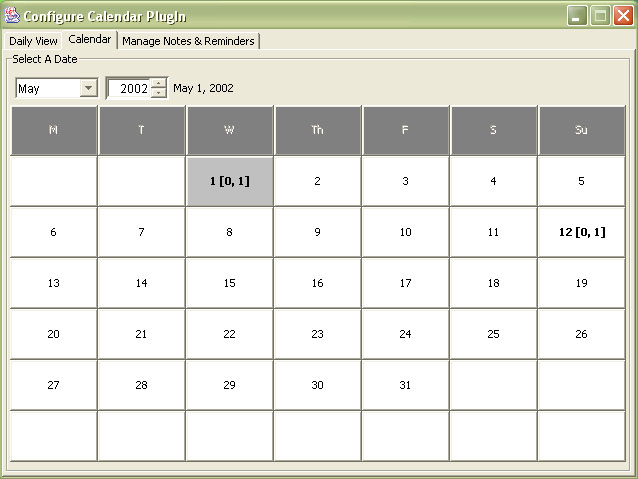
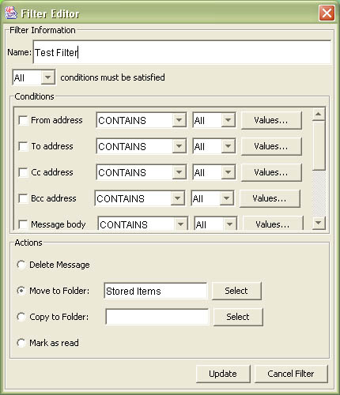
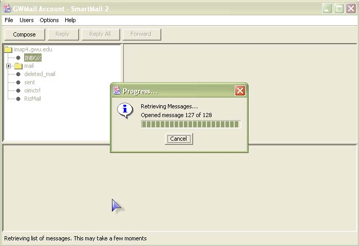
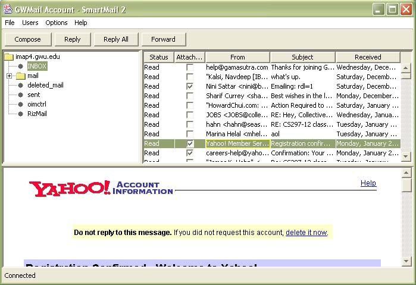
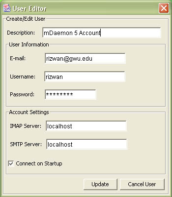

SmartMail:
This project involves the enhancement of the SmartMail engine and an e-mail client that is extendable through the use of plug-ins. This newer engine will be backwards compatible with the current version, and will offer new features and increased customizability. This engine builds upon the existing modules of the SmartMail engine and adds some basic new features, such as HTML support and complex folder operations. Some architectural changes are made with the addition of an Extensible Markup Language (XML) parsing module. In addition, the e-mail client offers an extendable plug-in architecture so that it can be modified in the future by creating plug-ins to do specialized work. Two plug-ins are being created for this project. A filtering plug-in provides an end-user with the ability to specify conditions on which actions are taken on e-mail messages. A calendaring plug-in offers the ability to create notes of future dates and reminders, and store them within the internet mail account so that a user's calendar may be accessed from anywhere. The SmartMail 2.0 system offers these features using the regular e-mail protocol.




